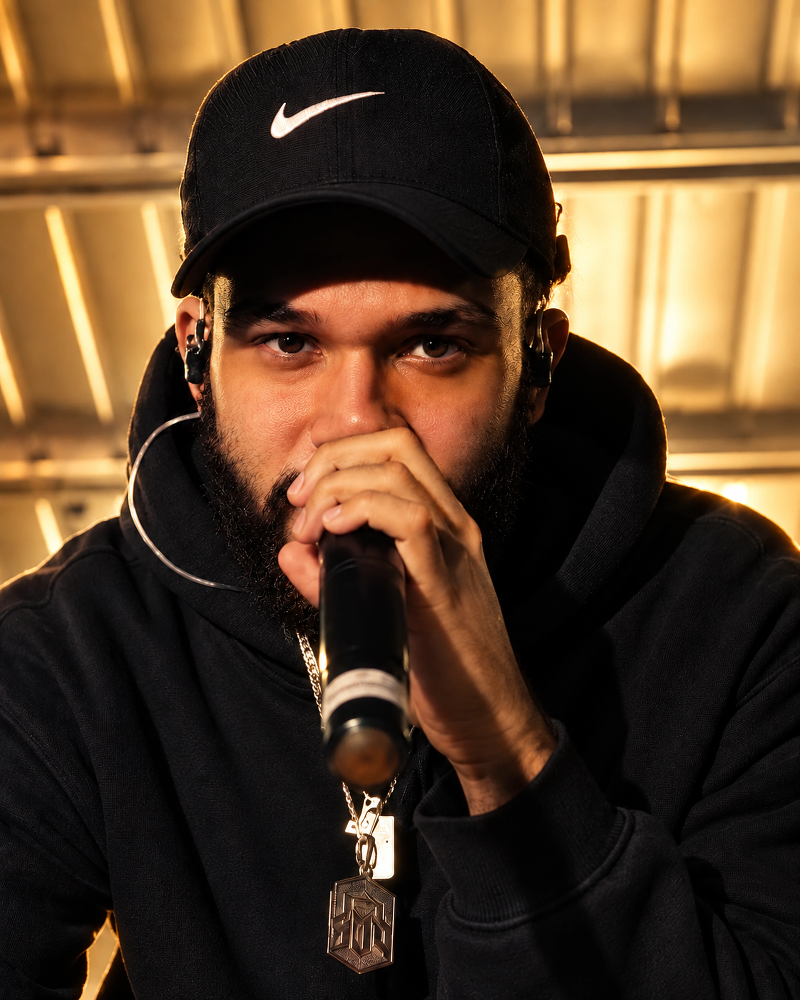

0402 / THE ROYAL LINE-UP
NIVI
LIVE / PERFORMANCEREDUTO 534HIP-HOP
NIVI é artista de hip-hop do Rio de Janeiro e um dos nomes ligados ao Reduto 534. Em 2025 lançou a Mixtape 534, projeto de 12 faixas que inclui “534”, “Fumaça Branca”, “Tyler Durden” e “Luka Doncic”.
O catálogo continua em movimento em 2026, com lançamentos como Contratempo. Sua presença no GUTT ROYALE aproxima o line-up do núcleo de rap e trap desenvolvido pelo Reduto.
NO ROYALE
NIVI chega ao Royale em live/performance, articulando repertório solo, colaborações e a identidade construída em torno da 534.